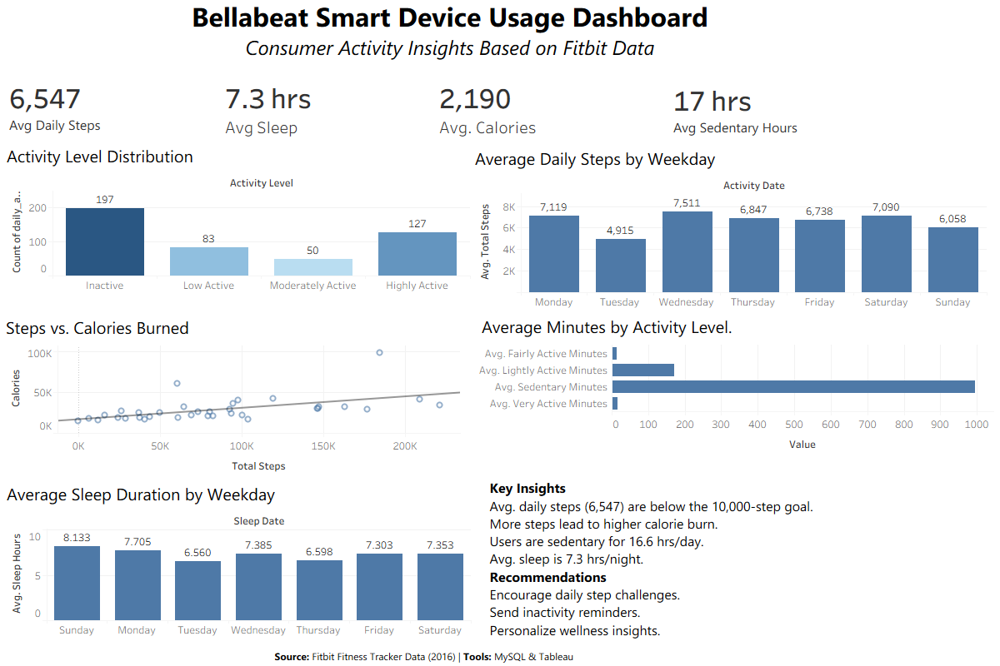

Bellabeat Smart Device Usage Analysis
Google Data Analytics Capstone Project
Project Overview
This project analyzes Fitbit smart device usage data to discover trends in user
activity, sleep habits and sedentary behavior. The insights were used to provide
marketing recommendations for Bellabeat.
Business Task
Analyze consumer fitness tracker data to identify behavioral patterns that can
help Bellabeat improve customer engagement and support future marketing
campaigns.
Tools Used
Dataset
Fitbit Fitness Tracker Data (Kaggle)
Dashboard Preview

View GitHub Repository
Analysis Process
- Imported Fitbit CSV datasets into MySQL.
- Cleaned and validated the data.
- Performed exploratory SQL analysis.
- Built Tableau dashboard.
- Generated business insights.
- Developed marketing recommendations.
Key Findings
- Average daily steps are approximately 6,547, below the recommended 10,000.
- Users spend approximately 16.6 hours per day sedentary.
- Average sleep duration is approximately 7.3 hours.
- Higher daily steps are associated with increased calorie burn.
Marketing Recommendations
- Introduce personalized activity challenges.
- Use inactivity reminders to reduce sedentary time.
- Provide personalized wellness recommendations.
- Reward users who consistently reach activity goals.
Project Repository:
github.com/Rigeltech95/bellabeat-smart-device-analysis